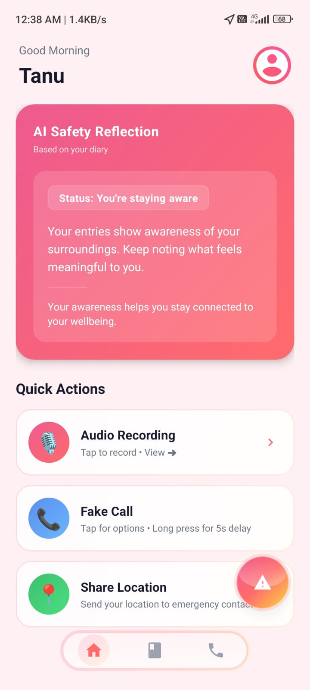
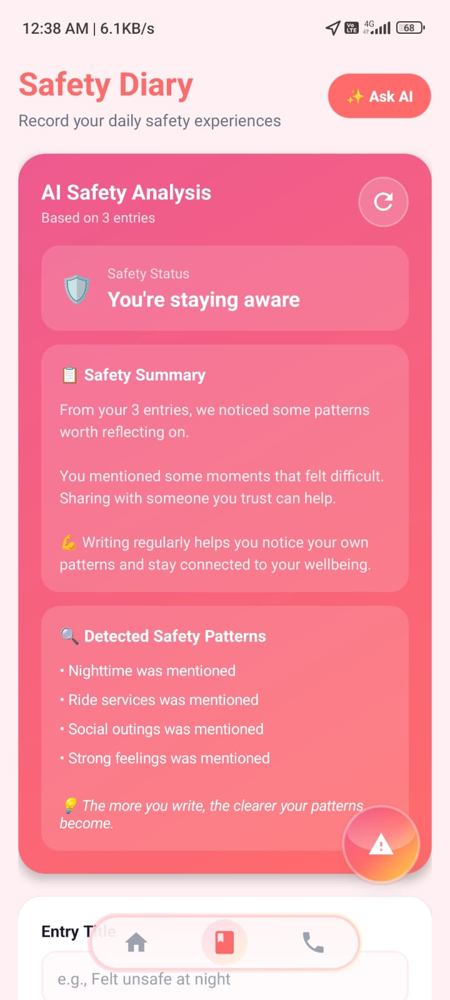

SafetyApp
AI Powered Women Safety
An intelligent Android application designed to enhance women’s safety by combining real-time emergency response features with AI-based safety analysis using NLP.

Problem
Emergency response needs to be instant
In critical situations, users don't have the time to navigate complex menus. Moreover, there's a lack of proactive systems that analyze daily experiences to provide actionable safety insights.
Solution
Reactive & Proactive Safety
SafetyApp provides an immediate SOS system with automated background actions (audio recording, location sharing), paired with a Safety Diary that leverages NLP to identify risks and suggest personalized safety measures.
Core Features
What it does
- One-tap SOS and real-time GPS location sharing
- Automatic background audio recording in emergencies
- Fake call simulation for escape situations
- Safety Diary utilizing NLP for intelligent insights
Design Approach
Designed for Stress Conditions
The interface is built to be highly intuitive and minimal, ensuring users can trigger safety protocols without hesitation. Visuals are clean and reassuring, powered by a robust OTP-based secure authentication backend.

Safety Diary and AI-driven insights screen
"This project addresses a real-world social problem by leveraging mobile technology and AI to improve personal safety. It not only provides immediate assistance during emergencies but also helps users become more aware of potential risks through intelligent insights."
Open Source
Explore the Codebase
The complete Android project is open source and available for review, highlighting clean architecture, API integrations, and practical application of NLP.
github.com/vashuverma24/SafetyApp ↗Outcome
Reliable, Secure
A robust safety solution that successfully combines real-time emergency handling with AI-driven analytics, functioning efficiently even under high-stress conditions.
Learnings
What I took away
Managing background services (audio/location) in Android requires careful handling of lifecycle and permissions.
Integrating basic NLP transforms standard diary text into actionable safety patterns.
UI for critical apps must prioritize large hit areas and zero friction.